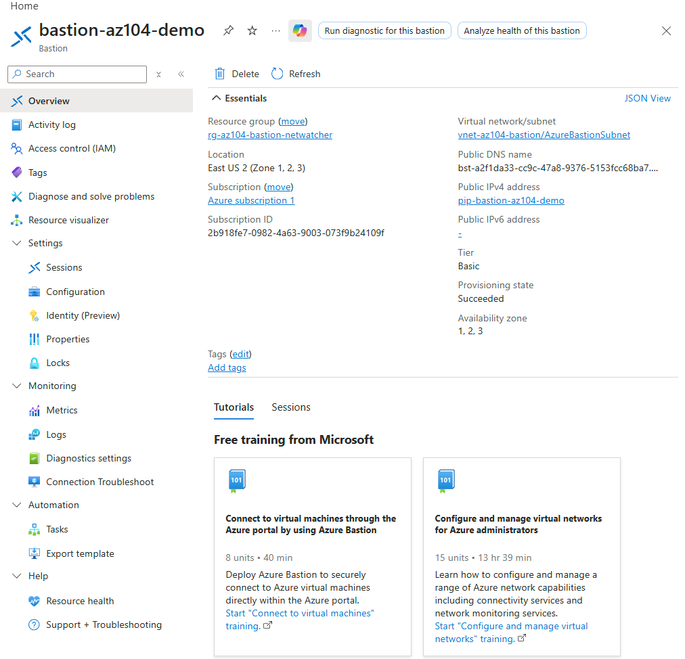
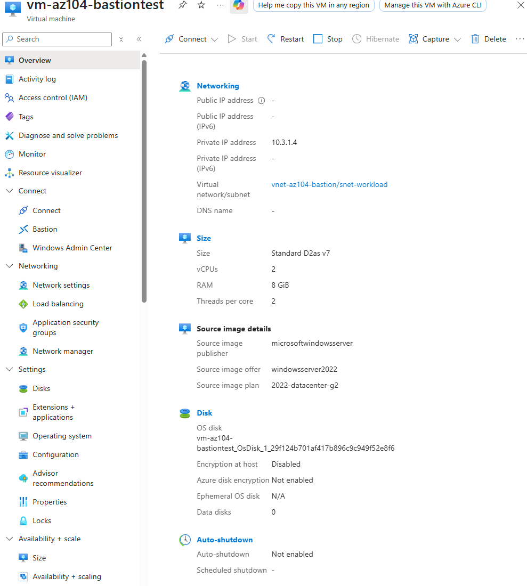
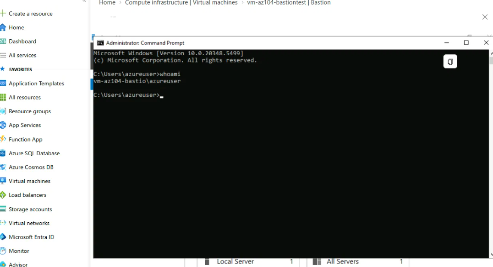
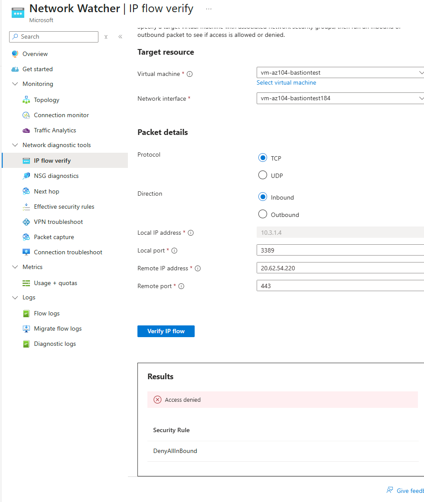

Deployed Azure Bastion and connected to a VM that has no public IP at all, no RDP client, no exposed port anywhere. Then used Network Watcher's IP flow verify tool to confirm, directly, that public-internet-facing RDP traffic to that VM is denied, while the live Bastion session had just worked seconds earlier. Highest cost-risk lab in the project so far, since Bastion has no pause option and bills a flat hourly rate the moment it exists.
Standard tier adds native client support, VNet peering scope, and IP-based connection, none of which this lab's objective needed. Basic is the cheaper tier and fully sufficient to demonstrate the core concept: browser-based access to a VM with zero public IP exposure.
Bastion has no auto-shutdown option, unlike every VM in this project so far. It either exists and bills continuously (roughly $0.19/hour) or it's deleted; there's no middle state. Isolating it in its own resource group made teardown a single, unambiguous action rather than something that could accidentally get left running inside a group with other, lower-urgency resources.
The point of this check wasn't to find an Allow rule, it was to prove that the VM's only real protection isn't a permissive NSG, it's the complete absence of a public attack surface. A Deny result against Bastion's public IP on port 3389, immediately after a real Bastion session had already worked, is stronger evidence of Bastion's actual architecture than an Allow result would have been.
Deployed Bastion and a VM with zero public IP in parallel to save time against the billing clock, connected through Bastion successfully, then used Network Watcher to prove the VM's public attack surface is genuinely closed.




"If you can build it again tomorrow without looking at yesterday's code, you've learned it. If you need to copy and paste it again, you've only completed a tutorial."
I am learning Infrastructure as Code deliberately, specifically Terraform and Bicep, rather than treating them as copy-paste snippets. Bastion's resource model requires its own dedicated public IP resource, distinct from the VM's networking, which is easy to overlook when clicking through the portal but unmissable when writing it explicitly in code.
Same structure, subnet name hardcoded and validated by Azure at deploy time regardless of authoring language, another reason writing it explicitly in code makes the requirement visible rather than something the portal wizard just quietly enforces behind the scenes.